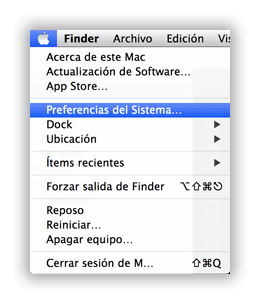
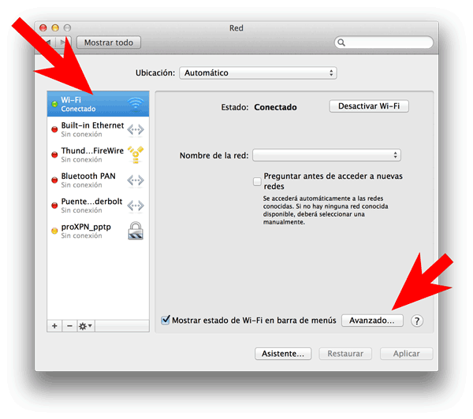

Ver páginas bloqueadas es más fácil de lo que crees. Te damos 4 opciones que van de simple a menos simple. Si no te sirve una, intenta con la siguiente.
Guía para configurar OpenDNS en MacOS
En el menú, haz clic en la Manzana, luego en "Preferencias del sistema".

Haz clic en "Red"
Selecciona, en el panel de la izquierda, la conexión que quieres configurar. Normalmente es la de Wi-Fi
Haz clic en el botón de "Avanzado" que está a la derecha

Selecciona la tableta "DNS"
Haz clic en el símbolo de "+" que aparece abajo de la lista de la izquierda.